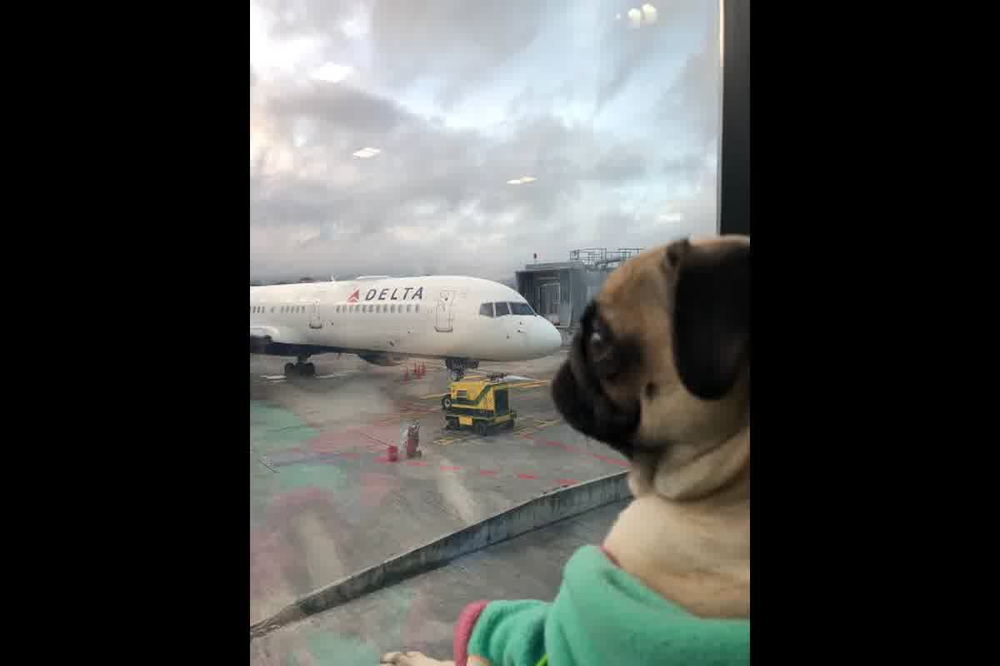
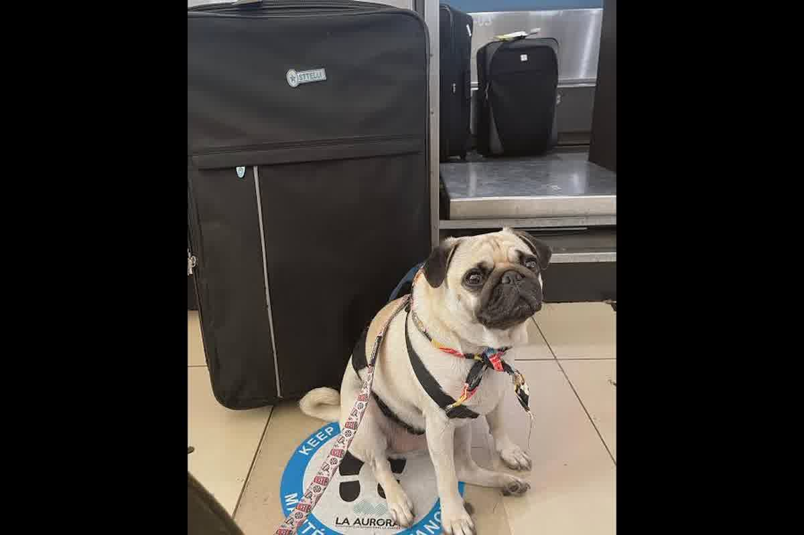

Medical-veterinary analysis on the dangers of air transport in Pug dogs. BOAS (Brachycephalic Obstructive Airway Syndrome), hypoxia and technical management for safe flights.

The Pug's cranial structure compromises its survival during the pressure and temperature fluctuations typical of a commercial flight. Before planning the transfer of a specimen of this breed, understand the mechanics of the process oftraveling with a pug on a plane: real risks and how to reduce themallows to avoid fatal incidents due to respiratory collapse. In Trujillo, we attend to cases where the lack of a prior functional evaluation ends in the denial of boarding by airlines that do not assume the responsibility of transporting animals that are anatomically unviable for the warehouse.
The shortening of the longitudinal axis of the skull in the Pug has not proportionally reduced the volume of the internal soft tissues. Elongated soft palate, stenotic nares, and tracheal hypoplasia make up brachycephalic obstructive airway syndrome (BOAS). On land, the animal compensates for this obstruction with constant muscular effort, but the decreased partial pressure of oxygen in a pressurized cabin at 8,000 feet quickly depletes its metabolic reserve.
The mild hypoxia experienced by any passenger becomes a critical emergency for a dog with restricted airflow. Boyle's Law explains how gases expand with a drop in pressure, which can further inflame the mucous membranes of the animal's already narrow airways.

Dogs regulate their body temperature by evaporation in the nasal and lingual mucosa through panting. The Pug lacks the contact surface necessary to perform this thermal exchange efficiently due to the compression of its nasal conchae. During stopovers at airports with high temperatures or in the confined environment of a transporter, the animal enters a cycle of hyperthermia that it cannot stop on its own.
Increasing the respiratory rate in an attempt to cool down only generates more inflammation in the larynx, closing the passage of air and raising the internal temperature to levels that cause multi-organ damage. Airlines apply strict restrictions when the temperature on the tarmac exceeds 27 degrees Celsius precisely because a brachycephalic does not survive a delay on asphalt without forced ventilation. At our practice in Trujillo, the most common mistake is ignoring that the stress of noise and separation accelerates this destructive thermal process.
The use of tranquilizing or sedative drugs during the flight represents an absolute medical contraindication for brachycephalics. Sedatives suppress the central nervous system and relax the throat muscles, causing the soft palate to completely obstruct the trachea. A sedated dog loses the ability to force air in during a hypoxic crisis, exponentially increasing the chances of silent cardiorespiratory arrest inside the transport box.
Risk reduction is achieved through prolonged acclimatization to the carrier so that the animal maintains basal cortisol levels and heart rate. A Pug that does not identify its carrier as a safe space will panic, which will skyrocket its oxygen demand and metabolic heat production. Prior behavioral management is the only safe tool to maintain vital signs within manageable ranges without resorting to pharmacological interventions that compromise breathing.
The only relatively safe way to transport a Pug is in the passenger cabin, as long as the total weight of the animal and the carrier does not exceed the limits established by the airline. Being under the direct supervision of the owner makes it possible to detect early signs of cyanosis or stridor gasping and act immediately with hydration or repositioning. However, if the animal is too large for the space under the seat, the options are drastically reduced due to hold bans for brachycephalic breeds.
A clinical examination focused on flight fitness should include assessment of body condition, as obesity severely aggravates the symptoms of BOAS. An overweight specimen has greater pressure on the diaphragm and a lower capacity for lung expansion, which reduces its safety margin against hypoxia. The decision to travel should be based on objective medical criteria and not on the urgency of the transfer, since a patient with advanced degrees of obstruction is an unviable candidate for air transportation.
Surgical correction of the nostrils and soft palate is an intervention that substantially improves respiratory capacity in the Pug. However, this surgery must be performed months in advance of the trip to allow complete healing of the tissues and adaptation of the respiratory system to the new air flow. Operating on a dog weeks before an international flight is negligence that can cause fatal post-surgical edema due to changes in atmospheric pressure.
The design of the conveyor should prioritize ventilation over all other factors, ensuring vents on all four sides to maximize passive airflow. The size of the box should allow the Pug to stand comfortably, preventing its neck from bending, which would make it even more difficult for air to pass through. In our experience in Peru, choosing an inadequate transport box is a critical point of failure that is rigorously detected by boarding authorities, resulting in missed flights and additional costs.
Prior nutritional preparation should avoid diets that generate excessive fermentation or flatulence, since the expansion of intestinal gases puts pressure on the diaphragm and makes breathing difficult. A light, highly digestible diet in the 48 hours before the flight reduces the metabolic load and the risk of vomiting that could lead to aspiration pneumonia if the animal is under stress. Hydration must be constant but controlled, ensuring that the dog arrives at the airport in a state of homeostatic balance that allows it to face the physiological challenge of the trip.
It is essential that your pet undergo a health evaluation so the veterinarian can design a structured plan and minimise breed-specific risks due to brachycephalic anatomy. Zoovet Travel performs BOAS (Brachycephalic Obstructive Airway Syndrome) clinical screening in Trujillo to determine if your Pug is fit to fly.